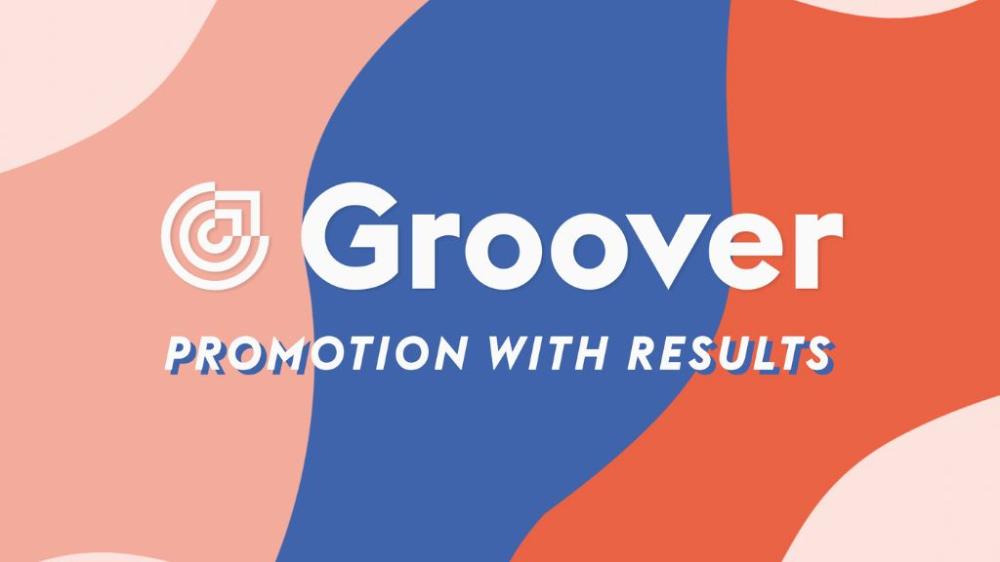

Groover.co: A Revolutionary Platform for Musicians and Producers

One platform that has been making waves in this space is Groover.co – a revolutionary tool designed to connect musicians and producers with influencers, labels, and media outlets. In this article, we will explore the key features and benefits of Groover.co, highlighting how it has become a game-changer for emerging artists seeking to amplify their presence in the music industry.
Bridging the Gap Between Artists and Influencers
Groover.co acts as a bridge between aspiring musicians and influencers within the music industry. Through its intuitive platform, artists can submit their tracks directly to influencers, such as bloggers, radio hosts, and playlist curators. This direct line of communication empowers artists to have their music heard by the right ears, potentially leading to increased visibility and opportunities for collaboration or promotion.
Targeted Promotion and Feedback
One of the standout features of Groover.co is its ability to provide targeted promotion and valuable feedback. Artists can choose influencers based on their music style, genre, and target audience. This targeted approach ensures that their music reaches the most relevant individuals in the industry. Moreover, influencers can provide constructive feedback on submitted tracks, offering artists a unique opportunity for improvement and growth.
Building Meaningful Connections
Beyond just a platform for promotion, Groover.co fosters the building of meaningful connections between artists and industry professionals. By streamlining the process of submitting music and receiving feedback, the platform encourages genuine interactions that can lead to collaborations, partnerships, and mentorship opportunities. This collaborative spirit sets Groover.co apart as a community-driven platform dedicated to supporting the growth of emerging talent.
Empowering Independent Artists
For independent musicians who may not have the backing of major labels, Groover.co levels the playing field by providing a direct channel to industry influencers. This democratization of access allows independent artists to showcase their talent and potentially secure opportunities that were traditionally reserved for those with established connections. Groover.co empowers artists to take control of their careers and build their own paths in the music industry.
Transparent and User-Friendly Platform
Groover.co is designed with simplicity and transparency in mind. The platform's user-friendly interface makes it easy for artists to navigate and submit their music, while influencers can efficiently discover new talent. The transparent process ensures that artists know who has listened to their tracks, providing insights into their reach and impact.
Groover.co has emerged as a revolutionary force for independent artists seeking to make their mark in the competitive world of music. As the platform continues to evolve, it is poised to shape the future of the industry by democratizing access and amplifying the voices of talented artists worldwide.
This dispatch was last updated on January 22, 2024